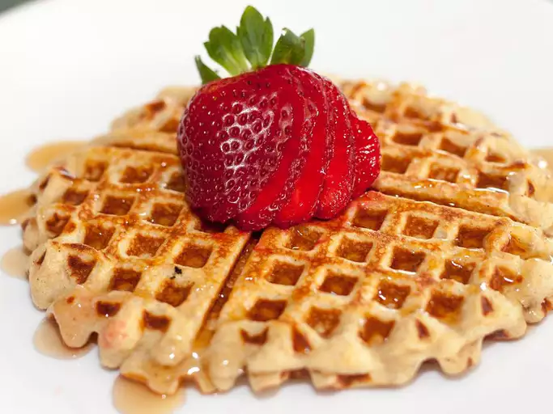

Protein Waffles

Description:
These healthy, protein-packed waffles are fluffy and delicious! No waffle iron? No problem! Make them into pancakes instead. Top with berries, bananas, dark chocolate chips, or anything else you like!
Nutrition Facts
(per serving)
254 9g 23g 21g
Calories Fat Carbs Protein
Ingredients:
- 1 cup oats.
- ½ cup cottage cheese.
- 2 eggs.
- 3 egg whites.
- 1 teaspoon honey.
- 1 splash pure vanilla extract.
- 1 pinch ground cinnamon
Steps:
- Preheat a waffle iron according to manufacturer's instructions.
- Blend oats, cottage cheese, eggs, egg whites, honey, vanilla extract, and cinnamon in a blender until creamy.
- Ladle batter into preheated waffle iron according to manufacturer directions and cook the waffles until golden and crisp, about 5 minutes. Repeat until entire batch of batter is used.